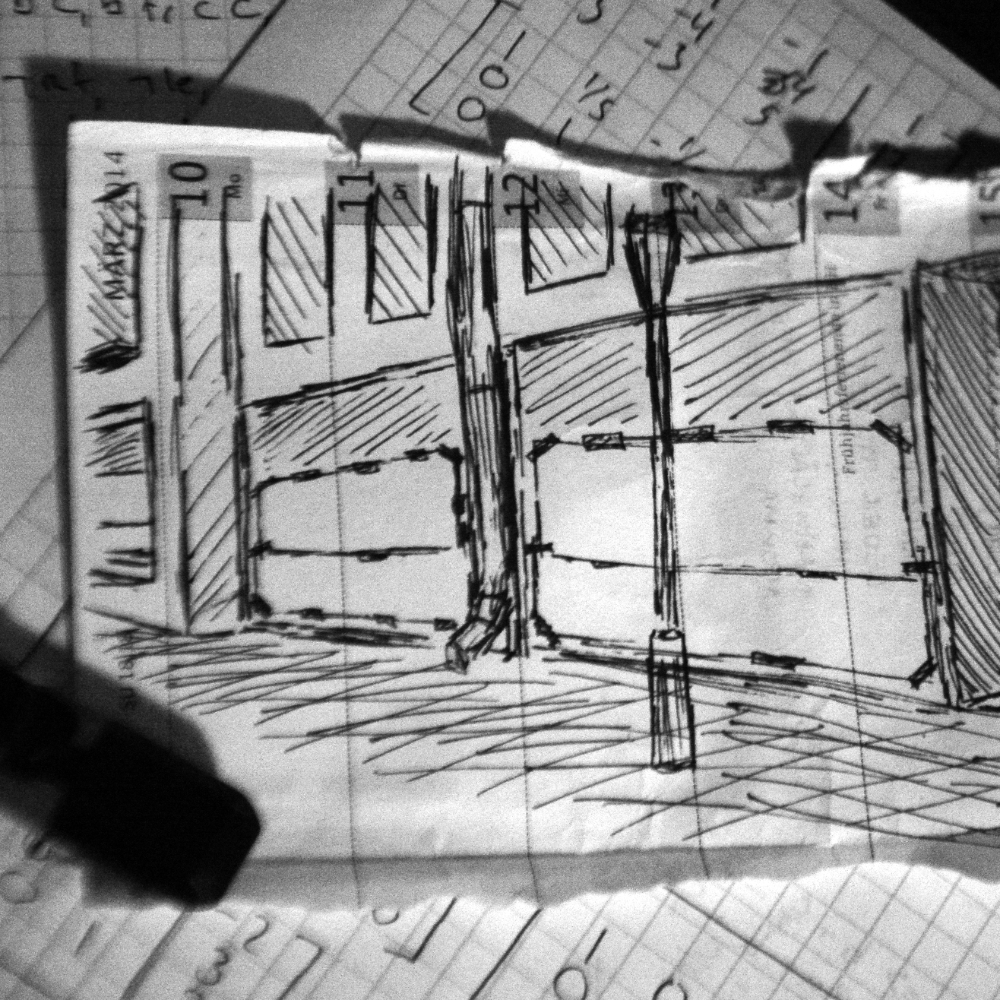

a proof of concept by
NEO POST MODERN
2014
pure CoffeeScript using 2D-canvas
all images (c) clemens schöll
[Project ImageMath]
First source image:
sketch of an installation
glowing question mark
glowing sticks
traffic light
industrial structure
Background color of first target:
white
black
Second source image:
sketch of an installation
glowing question mark
glowing sticks
traffic light
industrial structure
Background color of second target:
white
black
Background color of addition:
white
black
 ×
=
+
× =
=